I mean, I’m just going to be playing this game forever, probably. I already logged that I was playing this last summer, but I’m still putting lots of time into it, so it seemed appropriate to start the year off with this one :)
Media I Consumed in 2018
January
A pretty decent introduction to Elixir. The writing style is a bit clinical at times, but I went from zero to something with this book, so it’s definitely effective.

A pretty decent introduction to Elixir. The writing style is a bit clinical at times, but I went from zero to something with this book, so it’s definitely effective.
February
I’ve been finding it hard to focus on and complete books lately, so I figured it might help to reread a few Dresden Files, since they are quick, fun reads that I can get through in a few sittings. I’ll probably go ahead and reread a few more of these to pick up some book momentum.

I’ve been finding it hard to focus on and complete books lately, so I figured it might help to reread a few Dresden Files, since they are quick, fun reads that I can get through in a few sittings. I’ll probably go ahead and reread a few more of these to pick up some book momentum.
March
I love Tim Schafer and Double Fine Productions, but I’ve never played their first game before! Psychonauts, like a lot of DFP games, is sort of a confused mess in a lot of ways, but it has so much heart and charm that the overall effect is still compelling. This game has a *ton* of problems, but it also has some truly brilliant moments, beautiful art, and memorable writing and characters. I’ll never play this again, but I am very excited about the sequel, because I want to see these characters again in a game made by a studio that’s had a decade and a half of practice.
This is the video game equivalent of that seemingly-jobless-but-well-dressed guy who hangs out at the espresso bar and knows a lot about 1960’s boxers and Bebop.
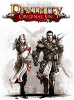
Way, way too much complexity for me right out the gate. I’ve heard a lot of great stuff about this game, but I just couldn’t hang with how many decisions it wanted me to make right away, not knowing what the ramifications would be.
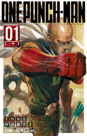
An absolutely hilarious, charming show. I’m told that there is a bunch of layers of puns, references, etc. in the writing and design of this series, most of which I don’t have the context to get, but even without that, I thought it was super entertaining. It’s also only one season, so you can get through the whole thing quickly!
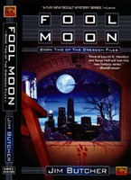
Continuing my quest to train my brain back up to spending serious chunks of time reading by going through the Dresden Files, which are pretty light and easy to get through. This one is much like the first. My memory is that they pick up a fair bit after book 2, but even given that this is still a decently fun adventure.
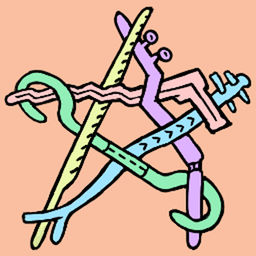
I honestly haven’t dug too deeply into this one yet, but at first blush it seems to be at least as good as Brough’s other games. Don’t be put off by the art style; just like my favorite iOS game, 868-HACK, there is some incredibly deep and compelling gameplay here, both in terms of figuring out what is even going on and then, once you start to learn the surface level, advanced strategies.
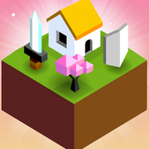
One of the most fun async multiplayer iOS games I’ve played! It really captures the feeling of playing a more complicated 4x strategy game like Civ, but very cleverly streamlined and simplified for mobile play. I haven’t played enough or gotten deeply enough into the strategy to know how deep it goes or whether there are degenerate strategies, but I’m having lots of fun with it so far.
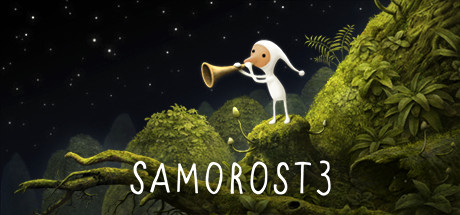
Like the other Amanita games, this one has some absolutely hauntingly beautiful artwork and music. Check it out for those! The gameplay, unfortunately, did not really grab me, but it was worth the visit just for the sights and sounds.

I love Tim Schafer and Double Fine Productions, but I’ve never played their first game before! Psychonauts, like a lot of DFP games, is sort of a confused mess in a lot of ways, but it has so much heart and charm that the overall effect is still compelling. This game has a *ton* of problems, but it also has some truly brilliant moments, beautiful art, and memorable writing and characters. I’ll never play this again, but I am very excited about the sequel, because I want to see these characters again in a game made by a studio that’s had a decade and a half of practice.

This is the video game equivalent of that seemingly-jobless-but-well-dressed guy who hangs out at the espresso bar and knows a lot about 1960’s boxers and Bebop.

Way, way too much complexity for me right out the gate. I’ve heard a lot of great stuff about this game, but I just couldn’t hang with how many decisions it wanted me to make right away, not knowing what the ramifications would be.

An absolutely hilarious, charming show. I’m told that there is a bunch of layers of puns, references, etc. in the writing and design of this series, most of which I don’t have the context to get, but even without that, I thought it was super entertaining. It’s also only one season, so you can get through the whole thing quickly!

Continuing my quest to train my brain back up to spending serious chunks of time reading by going through the Dresden Files, which are pretty light and easy to get through. This one is much like the first. My memory is that they pick up a fair bit after book 2, but even given that this is still a decently fun adventure.

I honestly haven’t dug too deeply into this one yet, but at first blush it seems to be at least as good as Brough’s other games. Don’t be put off by the art style; just like my favorite iOS game, 868-HACK, there is some incredibly deep and compelling gameplay here, both in terms of figuring out what is even going on and then, once you start to learn the surface level, advanced strategies.

One of the most fun async multiplayer iOS games I’ve played! It really captures the feeling of playing a more complicated 4x strategy game like Civ, but very cleverly streamlined and simplified for mobile play. I haven’t played enough or gotten deeply enough into the strategy to know how deep it goes or whether there are degenerate strategies, but I’m having lots of fun with it so far.

Like the other Amanita games, this one has some absolutely hauntingly beautiful artwork and music. Check it out for those! The gameplay, unfortunately, did not really grab me, but it was worth the visit just for the sights and sounds.
April
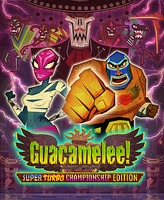
I put off playing this game for a long time, and I wish I hadn’t! It’s actually a lovely little brawler/metroidvania/platformer with great music and lots of style. I do sort of wish there had been more exploration and a little less combat, but overall it was quite good.
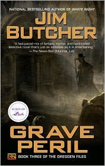
Still continuing on my quest to reread the Dresden Files in service of rebuilding my desire to read and focus on one book for long stretches. I actually feel like this one is a bit of a slump after the first two, which I know is not the most commonly held opinion, but it’s how I felt nonetheless. I think maybe because in this one, we’re starting to get into the larger mythos stuff and build out the longer overarching plot, but we aren’t fully into that stuff yet, so it’s a bit of an awkward transition. I do plan to keep rereading these, though, because they’re lots of fun and I have forgotten a lot of what happened and want to remember it.

I put off playing this game for a long time, and I wish I hadn’t! It’s actually a lovely little brawler/metroidvania/platformer with great music and lots of style. I do sort of wish there had been more exploration and a little less combat, but overall it was quite good.

Still continuing on my quest to reread the Dresden Files in service of rebuilding my desire to read and focus on one book for long stretches. I actually feel like this one is a bit of a slump after the first two, which I know is not the most commonly held opinion, but it’s how I felt nonetheless. I think maybe because in this one, we’re starting to get into the larger mythos stuff and build out the longer overarching plot, but we aren’t fully into that stuff yet, so it’s a bit of an awkward transition. I do plan to keep rereading these, though, because they’re lots of fun and I have forgotten a lot of what happened and want to remember it.
May
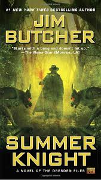
More Dresden! I feel like this book is where the series really hits its stride. Not a whole lot else to say about it...it’s enjoyable and a nice quick weekend read!
The best intro to React and the React ecosystem out there. The web frontend world moves unbelievably fast, and a lot of materials get out of date very quickly. The authors of this book work hard to keep it up to date. I learned a ton from this book, and it’s what I recommend to everyone who asks for React resources. Available here.
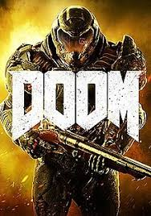
I’m not a huge FPS fan, but I will dip into the genre every now and then. This modern reincarnation of the classic DOOM is a really refreshing, arcade-style shot of adrenaline. I got about halfway through the game, and it seems to be more of the same for the rest of it, but don’t let me not finishing the game suggest that it isn’t a fun time! I thoroughly enjoyed what I did play and felt satisfied with that much of it.
I loved this show. I’m kind of a sucker for Cyberpunk, and this delivers a huge dose of Cyberpunk goodness. The first few episodes are by far the best part; things start to go a little off the rails by the last act, but I didn’t mind. It’s got beautiful, imaginative art direction and competent actors, so even when the writing got a little wonky I was having a great time. I really hope they do a second season of this one.
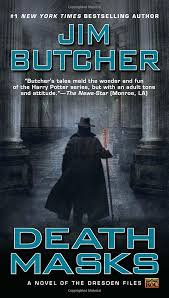
Dresden Train CHOOOO CHOOOOOO
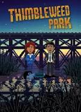
What a delightful game! Pitched as something of a throwback to the Maniac Mansion point-and-click adventure games of old, this feels anything but dated. While the graphics and UI (as well as lots of 80s geek references and adventure game in-jokes) might remind you of an older gaming era, the writing is fresh and funny, the characters are charming and memorable, and the puzzles are engaging without ever quite hitting that old-school level of pure frustration. I did get stuck several times on Hard Mode, but fortunately there’s a clever graduated hint system in-game, which starts out vague and gets more specific if you want.
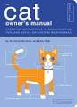
A cute little intro to cat ownership. I didn’t really learn much I hadn’t picked up before, but I can imagine it being really helpful for someone thinking about getting their first cat. The “technical manual” style alternates between charming and annoying.
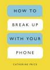
A reasonably compelling argument for why you should spend less time glued to your phone, and some practical steps you can take to achieve that. There’s nothing here you haven’t read already if this is a topic of interest to you, but the presentation is good, and it’s never bad to be reminded of these ideas. I’m actually not too bad with my phone, but I do have fairly severe Reddit and Twitter addictions, so I used this as motivation to tackle those.

More Dresden! I feel like this book is where the series really hits its stride. Not a whole lot else to say about it...it’s enjoyable and a nice quick weekend read!
The best intro to React and the React ecosystem out there. The web frontend world moves unbelievably fast, and a lot of materials get out of date very quickly. The authors of this book work hard to keep it up to date. I learned a ton from this book, and it’s what I recommend to everyone who asks for React resources. Available here.

I’m not a huge FPS fan, but I will dip into the genre every now and then. This modern reincarnation of the classic DOOM is a really refreshing, arcade-style shot of adrenaline. I got about halfway through the game, and it seems to be more of the same for the rest of it, but don’t let me not finishing the game suggest that it isn’t a fun time! I thoroughly enjoyed what I did play and felt satisfied with that much of it.
I loved this show. I’m kind of a sucker for Cyberpunk, and this delivers a huge dose of Cyberpunk goodness. The first few episodes are by far the best part; things start to go a little off the rails by the last act, but I didn’t mind. It’s got beautiful, imaginative art direction and competent actors, so even when the writing got a little wonky I was having a great time. I really hope they do a second season of this one.

Dresden Train CHOOOO CHOOOOOO

What a delightful game! Pitched as something of a throwback to the Maniac Mansion point-and-click adventure games of old, this feels anything but dated. While the graphics and UI (as well as lots of 80s geek references and adventure game in-jokes) might remind you of an older gaming era, the writing is fresh and funny, the characters are charming and memorable, and the puzzles are engaging without ever quite hitting that old-school level of pure frustration. I did get stuck several times on Hard Mode, but fortunately there’s a clever graduated hint system in-game, which starts out vague and gets more specific if you want.

A cute little intro to cat ownership. I didn’t really learn much I hadn’t picked up before, but I can imagine it being really helpful for someone thinking about getting their first cat. The “technical manual” style alternates between charming and annoying.

A reasonably compelling argument for why you should spend less time glued to your phone, and some practical steps you can take to achieve that. There’s nothing here you haven’t read already if this is a topic of interest to you, but the presentation is good, and it’s never bad to be reminded of these ideas. I’m actually not too bad with my phone, but I do have fairly severe Reddit and Twitter addictions, so I used this as motivation to tackle those.
June
Instead of reading this, you should just go play this game now. It’s free, only takes a couple of hours, and is both hilarious and surprising throughout. I won’t say any more than that; just go play it!
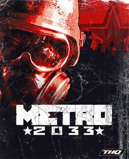
Seems kinda cool but won’t run on my PC :/
Very clever, I guess? Surely there must be a way to make the point that there are some ethical problems with the “Shooting Brown People Simulator” genre of games without making one of them. I appreciate that they were aspiring for something a little higher, but the execution (so to speak) left a lot to be desired.
This one didn’t really grab me. The art and narration are really beautiful, but the gameplay was not super engaging. I would read the hell out of a comic made by the same team.
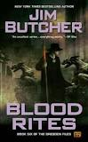
More Dresden! At this point, the stories really start to venture outsite the realm of self-contained and into the realm of a true series. Not that they weren’t a series before, but now we’re into “can’t stand by itself” territory. That’s not a bad thing! I like it, in fact, since I’m invested in these characters and world. Good stuff.
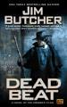
Harry starts to develop more depth as a character in this book, and the morality of the whole thing adds several new shades of grey. Besides that, this book has some of the best set pieces of the series so far.

Instead of reading this, you should just go play this game now. It’s free, only takes a couple of hours, and is both hilarious and surprising throughout. I won’t say any more than that; just go play it!

Seems kinda cool but won’t run on my PC :/
Very clever, I guess? Surely there must be a way to make the point that there are some ethical problems with the “Shooting Brown People Simulator” genre of games without making one of them. I appreciate that they were aspiring for something a little higher, but the execution (so to speak) left a lot to be desired.
This one didn’t really grab me. The art and narration are really beautiful, but the gameplay was not super engaging. I would read the hell out of a comic made by the same team.

More Dresden! At this point, the stories really start to venture outsite the realm of self-contained and into the realm of a true series. Not that they weren’t a series before, but now we’re into “can’t stand by itself” territory. That’s not a bad thing! I like it, in fact, since I’m invested in these characters and world. Good stuff.

Harry starts to develop more depth as a character in this book, and the morality of the whole thing adds several new shades of grey. Besides that, this book has some of the best set pieces of the series so far.
July
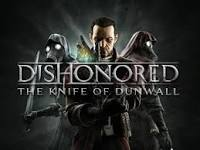
I really enjoyed Dishonored last year, and this DLC is a few more missions of the same goodness. I’d say it’s not as strong as the main game, but it still has some great worldbuilding and good gameplay. The first mission is good enough to stand with any from the main game, but missions 2 and 3 are a bit weaker. Still overall quite fun!
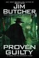
This is a bit of a weird one, structurally. The first 2/3 of the book, the main story, is one of the weaker chunks of Dresden material, in my opinion. But after the main event is over, there is still a lot left in the book, and it’s got some genuinely beautiful character moments in it. That plus more information about the overarching story of the series adds up to a great read, in spite of the not so great A plot.
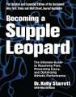
First of all, this book has probably the worst title imaginable. The content is interesting, though. I can’t say I’m equipped to judge the quality of advice that Starrett puts forth about mobility. He certainly is a popular figure, and a lot people like what he has to say. I think the most useful part of this book for me personally is simply the reminder to move with intention in a way that your body is designed to do. There are a lot of things in this book that I wouldn’t feel safe trying without the supervision of a physical therapist, but the spinal bracing sequence at the heart of everything here is easy and makes a lot of sense to me.
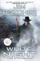
More Dresden!
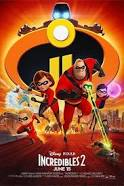
What a treat! The first Incredibles movie is one of my favorite animated films, and the sequel was worth the wait. I especially love that Elastigirl was more of the protagonist this time, and also that the Mr. Incredible-at-home-with-the-kids stuff wasn’t just played for laughs. Sure, it was funny, but the humor was genuine, and we saw someone who was faced with a challenge and met it seriously. Anyway, great movie!

I really enjoyed Dishonored last year, and this DLC is a few more missions of the same goodness. I’d say it’s not as strong as the main game, but it still has some great worldbuilding and good gameplay. The first mission is good enough to stand with any from the main game, but missions 2 and 3 are a bit weaker. Still overall quite fun!

This is a bit of a weird one, structurally. The first 2/3 of the book, the main story, is one of the weaker chunks of Dresden material, in my opinion. But after the main event is over, there is still a lot left in the book, and it’s got some genuinely beautiful character moments in it. That plus more information about the overarching story of the series adds up to a great read, in spite of the not so great A plot.

First of all, this book has probably the worst title imaginable. The content is interesting, though. I can’t say I’m equipped to judge the quality of advice that Starrett puts forth about mobility. He certainly is a popular figure, and a lot people like what he has to say. I think the most useful part of this book for me personally is simply the reminder to move with intention in a way that your body is designed to do. There are a lot of things in this book that I wouldn’t feel safe trying without the supervision of a physical therapist, but the spinal bracing sequence at the heart of everything here is easy and makes a lot of sense to me.

More Dresden!

What a treat! The first Incredibles movie is one of my favorite animated films, and the sequel was worth the wait. I especially love that Elastigirl was more of the protagonist this time, and also that the Mr. Incredible-at-home-with-the-kids stuff wasn’t just played for laughs. Sure, it was funny, but the humor was genuine, and we saw someone who was faced with a challenge and met it seriously. Anyway, great movie!
August
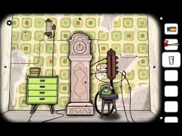
I’ve been hearing about this series for quite a while now, but I’d written it off because it sounded like some kind of digital room escape, which seemed lame. I was so wrong! This is an absolute delight. The interactions and puzzles are pretty barebones, but rather than being boring, they serve and enhance the creepy atmosphere. I am definitely going to be playing through quite a bit more of this series. I love the Twin Peaks-esque vibes.
Totally hilarious! I didn’t have high hopes going in because I had read some bad reviews, but I loved it. Highly recommended.
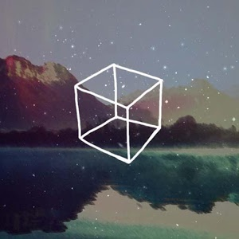
The second Cube Escape game! I didn’t like this one as much as the first, but it still had a couple of good spooky moments and great atmosphere. I’m excited to play more of this series.
A beautiful, meditative puzzle game. I think I’ll be coming back to this one for a long time. What I love about Evergarden is that you can engage with it at whatever level of intensity you want: you can just kind of click around and watch flowers grow, or you can concentrate hard and plan things out several moves in advance.
I was sort of ambivalent about this movie, believe it or not. There were a couple of really great scenes and a couple of cringes as well. It was...fine?
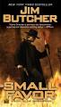
Dreeeeeeeesden.

I’ve been hearing about this series for quite a while now, but I’d written it off because it sounded like some kind of digital room escape, which seemed lame. I was so wrong! This is an absolute delight. The interactions and puzzles are pretty barebones, but rather than being boring, they serve and enhance the creepy atmosphere. I am definitely going to be playing through quite a bit more of this series. I love the Twin Peaks-esque vibes.
Totally hilarious! I didn’t have high hopes going in because I had read some bad reviews, but I loved it. Highly recommended.

The second Cube Escape game! I didn’t like this one as much as the first, but it still had a couple of good spooky moments and great atmosphere. I’m excited to play more of this series.
A beautiful, meditative puzzle game. I think I’ll be coming back to this one for a long time. What I love about Evergarden is that you can engage with it at whatever level of intensity you want: you can just kind of click around and watch flowers grow, or you can concentrate hard and plan things out several moves in advance.
I was sort of ambivalent about this movie, believe it or not. There were a couple of really great scenes and a couple of cringes as well. It was...fine?

Dreeeeeeeesden.
September
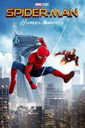
I loved this movie! I am pretty burnt out on superhero movies at this point, but this was a real breath of fresh air. Genuinely funny and full of heart. Excited for the inevitable sequel.
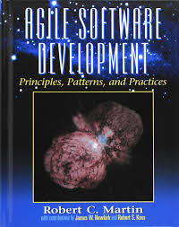
This is a bit of a weird one. I think you have to look at it as a product of its time, when it was more of a surprising statement to say that coding practices affected a team’s agility. For me, in 2018, the project management and customer communication stuff could have used way more fleshing out, and the coding stuff (especially all the copypasta from design patterns books) could have been drastically cut. Overall, this was not a useful book for what I wanted: information and techniques (beyond just code) that can help a team to be more agile.
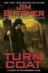
Dresden! Finally closing in on a complete reread of the series so far. Just a few more books to go.

I loved this movie! I am pretty burnt out on superhero movies at this point, but this was a real breath of fresh air. Genuinely funny and full of heart. Excited for the inevitable sequel.

This is a bit of a weird one. I think you have to look at it as a product of its time, when it was more of a surprising statement to say that coding practices affected a team’s agility. For me, in 2018, the project management and customer communication stuff could have used way more fleshing out, and the coding stuff (especially all the copypasta from design patterns books) could have been drastically cut. Overall, this was not a useful book for what I wanted: information and techniques (beyond just code) that can help a team to be more agile.

Dresden! Finally closing in on a complete reread of the series so far. Just a few more books to go.